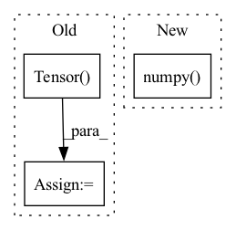

Pattern ID :8946

Before Change
new_w_mask = torch.Tensor((w_copy >= w_percentile).astype(int))
new_b_mask = torch.Tensor((b_copy >= b_percentile).astype(int))
self.w_mask = torch.Tensor(new_w_mask)
self.b_mask = torch.Tensor(new_b_mask)
self.w = torch.nn.Parameter(
self.w * self.w_mask
After Change
w_copy = np.abs(self.w.detach().cpu().numpy())
b_copy = np.abs(self.b.detach().cpu().numpy())
w_percentile = np.percentile(w_copy, percentile)
b_percentile = np.percentile(b_copy, percentile)
In pattern: SUPERPATTERN
Frequency: 4
Non-data size: 3
Instances
Fragment ID: 32756691
Project Name: beyond-ml-labs/beyondml
Commit Name: 64b55ae710fed541b78dd594961ee451393123ec
Time: 2022-10-28
Author: jacob.renn@squared.ai
File Name: beyondml/pt/layers/MaskedConv3D.py
M Class Name: MaskedConv3D
N Class Name: MaskedConv3D
M Method Name: prune(2)
N Method Name: prune(2)
M Parent Class: torch.nn.Module
N Parent Class: torch.nn.Module
M File Name: beyondml/pt/layers/MaskedConv3D.py
N File Name: beyondml/pt/layers/MaskedConv3D.py
M Start Line: 130
M End Line: 139
N Start Line: 129
N End Line: 135
'>
Before Change
raw_wi : separated tensor along batch dimension of back; (B=1, I=32*32, O=128, KH=4, KW=4)
"""
// conv for compare
escape_NaN = torch.Tensor([1e-4])
escape_NaN = escape_NaN.to(device)
wi = wi[0] // [L, C, k, k]
max_wi = torch.sqrt(
torch.sum(torch.pow(wi, 2) + escape_NaN, dim=[1, 2, 3], keepdim=True))
After Change
w_add = torch.arange(int_fs[3], device=device).view([1, 1, 1, int_fs[3]]).expand(int_fs[0], -1, int_fs[2], -1)
offsets = offsets - torch.cat([h_add, w_add], dim=1)
// to flow image
flow = torch.from_numpy(flow_to_image(offsets.permute(0, 2, 3, 1).detach().cpu().numpy())) / 255.
flow = flow.permute(0, 3, 1, 2)
// case2: visualize which pixels are attended
// flow = torch.from_numpy(highlight_flow((offsets * mask.long()).detach().cpu().numpy()))
'>
Fragment ID: 32756693
Project Name: nipponjo/deepfillv2-pytorch
Commit Name: b56ad8569aeea17343cedc9c7331223e134c228f
Time: 2021-12-02
Author: 28433296+nipponjo@users.noreply.github.com
File Name: model/networks_tf.py
M Class Name: ContextualAttention
N Class Name: ContextualAttention
M Method Name: forward(4)
N Method Name: forward(4)
M Parent Class: nn.Module
N Parent Class: nn.Module
M File Name: model/networks_tf.py
N File Name: model/networks_tf.py
M Start Line: 309
M End Line: 467
N Start Line: 338
N End Line: 464
'>
Before Change
if self.cut_silence:
audio = self.cut_silence_from_beginning_and_end(audio)
else:
audio = torch.Tensor(audio)
audio = self.resample(audio)
return audio
def visualize_cleaning(self, unclean_audio):
After Change
audio = self.to_mono(audio)
audio = self.normalize_loudness(audio)
if self.cut_silence:
audio = self.cut_silence_from_beginning_and_end(audio).numpy()
audio = resample(y=audio, orig_sr=self.sr, target_sr=self.new_sr)
return audio
def visualize_cleaning(self, unclean_audio):
'>
Fragment ID: 32756697
Project Name: digitalphonetics/ims-toucan
Commit Name: 097542ba8bca45f22b43e7960af6593c0d82c560
Time: 2021-09-17
Author: florian.lux@ims.uni-stuttgart.de
File Name: Preprocessing/AudioPreprocessor.py
M Class Name: AudioPreprocessor
N Class Name: AudioPreprocessor
M Method Name: normalize_audio(2)
N Method Name: normalize_audio(2)
M Parent Class:
N Parent Class:
M File Name: Preprocessing/AudioPreprocessor.py
N File Name: Preprocessing/AudioPreprocessor.py
M Start Line: 116
M End Line: 121
N Start Line: 116
N End Line: 119
'>
Before Change
order = order[:n_pre_nms]
roi = roi[order, :]
roi = nms(roi,self.nms_thresh)
roi = torch.Tensor(roi)
roi = roi[:n_post_nms]
return roi
After Change
self.nms_thresh
)
keep = keep[:n_post_nms]
roi = roi[keep.cpu().numpy()]
return roi
'>
Fragment ID: 32756700
Project Name: bubbliiiing/faster-rcnn-pytorch
Commit Name: 93017da10a00eba0a51be247f7c36bd4295e2eb9
Time: 2020-08-31
Author: 47347516+bubbliiiing@users.noreply.github.com
File Name: nets/rpn.py
M Class Name: ProposalCreator
N Class Name: ProposalCreator
M Method Name: __call__(6)
N Method Name: __call__(6)
M Parent Class:
N Parent Class:
M File Name: nets/rpn.py
N File Name: nets/rpn.py
M Start Line: 57
M End Line: 60
N Start Line: 55
N End Line: 70